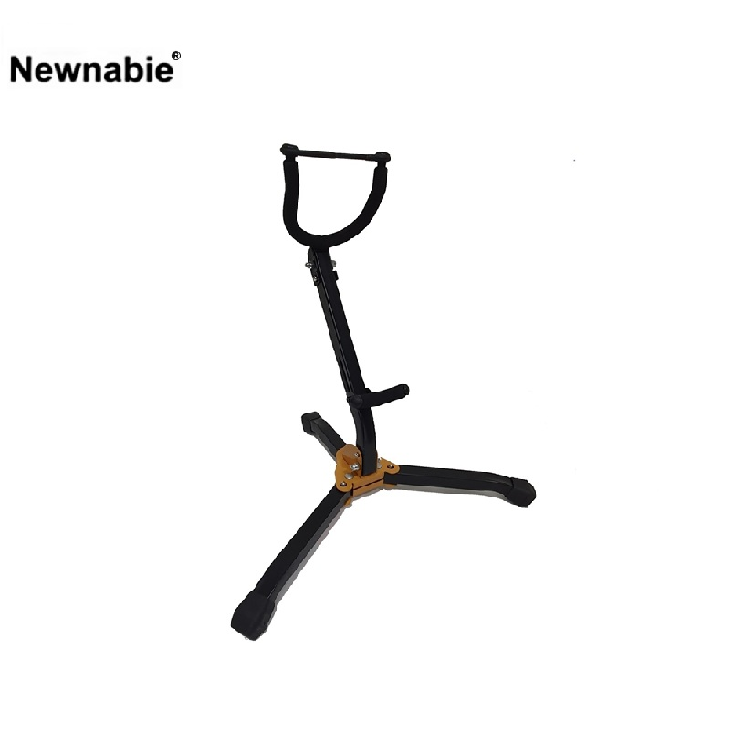

NB-654는 알토 색소폰 전용 경량 스탠드입니다. 고정 450 mm 높이와 0.95 kg의 초경량 구조로 DH005 대비 휴대성에 집중했으며, 스펀지 지지대로 악기 마감을 보호합니다.

알토 색소폰 전용 경량 스탠드. DH005 대비 가벼운 0.95 kg 무게로 휴대성에 특화된 모델입니다.
NB-654는 알토 색소폰 전용 휴대형 스탠드입니다. DH005의 높이 조절 기능을 제거하고 450 mm 고정 높이 구조로 간략화하여, 0.95 kg의 초경량 자중을 실현했습니다. 이동 연주·세션 플레이·스튜디오 작업 등 스탠드를 자주 들고 다녀야 하는 환경에 최적화되어 있습니다.
스틸 프레임과 소프트 스펀지 패드 조합으로 악기 마감을 보호하면서도 필요한 안정성을 확보했습니다. 30,800 원의 단가로 DH005보다 약간 높지만, 경량성과 휴대성을 중시하는 연주자에게는 더 실용적인 선택입니다.
| 모델명 | NB-654 |
|---|---|
| 타입 | Compact Alto Saxophone Stand |
| Height | 450 mm (고정) |
| Material | Steel + Sponge |
| Net Weight | 0.95 kg |
| 권장소비자가 | 30,800 원 / 개 (VAT 포함) |
※ 본 사양 · 단가는 수입원(현대에이브이씨) 2026-01-01 스탠드 가격표 기준입니다.